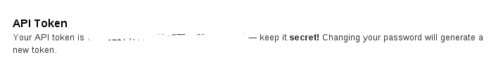

Este artículo explicará como crear una llave pública RSA para usarla en los sitios github, gitorius y bitbucket y así poder subir código con git y mercurial a dichos repositorios.
Lo primero que se tiene que hacer es generar la llave ssh. El comando para hacerlo es ssh-keygen:
ssh-keygen -t rsa -C "ecrespo@cenditel.gob.ve
Generating public/private rsa key pair.
Enter file in which to save the key (/home/ernesto/.ssh/id_rsa): <Ruta donde se va a guardar la llave RSA>
Enter passphrase (empty for no passphrase): <colocar la frase a usar con la llave>
Enter same passphrase again: <colocar la frase a usar con la llave>
Your identification has been saved in /home/ernesto/.ssh/id_rsa.
Your public key has been saved in /home/ernesto/.ssh/id_rsa.pub.
The key fingerprint is:
f2:09:cf:fe:53:1d:d3:d9:25:96:c9:11:68:5e:3e:bc ecrespo@cenditel.gob.ve
The key's randomart image is:
+--[ RSA 2048]----+
| .o. |
| o..+ |
| o o +* .|
| C ..+o+|
| S + o+o|
| . .Do |
| . o . |
| + |
| . |
+-----------------+
Agregar la llave a github:
En github seleccione Account settings, luego seleccione ssh public keys y luego Add another public key.
Despliegue el contenido del archivo id_rsa.pub:
cat less id_rsa.pub
ssh-rsa AAAAB3NzaC1yc2EAAAADAQABAAABAQDPW48GvjuwVMHdlU6kRqniKDNwDrz
12YPL1Sdi9AEn4uuRxs34+NH3UfarjweKFXMqkFRZaR9woV21GxvfF+eRnAfCWFI0Unzpxh1LaaLaDcBfNZ
x1PwkaR6zmaNKjwhAS2N4K3Rd+gCtPl57CoFQPNY7ZsZSJcn0iTn1jtQi3I3JpeQDTq0yf1nsjJFTSC/n23TROj2mvaHVsUB86ezAsia
JXJd8aZWJsyAEdBxn6dAxxxAtGRzQCq8oNqhWhqmbzf6C3zKARwCbbdo7UB
M/StTkb3aYnBbTLhHGnY8vm5n/aP7/1GZNqTbWxfmH5hm/2mDfT8hPK2eCCklGsnF+qlxpPu7 ecrespo@cenditel.gob.ve
La siguiente imagen muestra la información desplegada en github:

Validar la comunicación con github. Para validar la comunicación con la llave pública se ejecuta lo siguiente:
ssh -T git@github.com
Aparecerá la siguiente información:
The authenticity of host 'github.com (207.97.227.239)' can't be established.
RSA key fingerprint is 16:27:ac:a5:76:28:2d:36:63:1b:56:4d:eb:df:a6:48.
Are you sure you want to continue connecting (yes/no)? yes
Warning: Permanently added 'github.com,207.97.227.239' (RSA) to the list of known hosts.
Hi ecrespo! You've successfully authenticated, but GitHub does not provide shell access.
Configurar la información del usuario y correo en git:
git config --global user.name "Ernesto Crespo"
git config --global user.email "ecrespo@cenditel.gob.ve"
Configurar el token github.
Seleccione Account settings, luego Account Admin. Ahí aparecerá lo que se muestra en la siguiente figura:

Agregar al usuario github y el token:
git config --global github.user ecrespo
git config --global github.token cf0fe21f4ff7fb51b686bb712347043e
Ya se tiene github configurado con la llave RSA del equipo asociado al correo.
Para el caso de gitorius se selecciona el dashboard, luego se le da click a Manage SSH keys:

Le dan click a Add ssh keys:
Agregar la llave en bitbucket. Le dan click al Account al ingresar a su cuenta en bitbucket.org: Se va al campo de ssh keys y se agrega la llave como lo muestra la figura:

En el siguiente artículo se explicará como usar los comandos para clonar, hacer commit y actualizar los controles de versiones distribuidos de github, gitorius y bitbucket.
¡Haz tu donativo! Si te gustó el artículo puedes realizar un donativo con Bitcoin (BTC) usando la billetera digital de tu preferencia a la siguiente dirección: 17MtNybhdkA9GV3UNS6BTwPcuhjXoPrSzV
O Escaneando el código QR desde la billetera:

Comments !